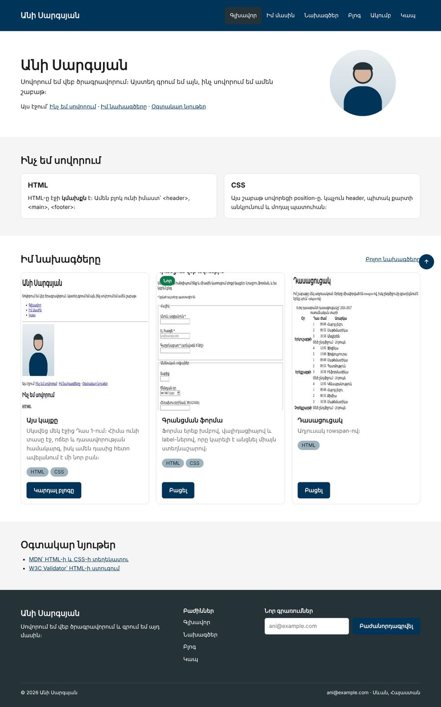
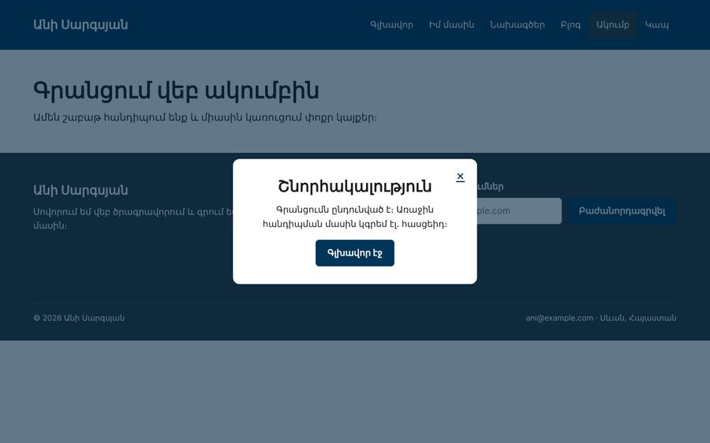

Տնային աշխատանք · HTML Դաս 15 · մինի-նախագիծ
Գործնականում ես կիրառում position-ի բոլոր արժեքները․ sticky header, absolute պիտակ, fixed «վեր» կոճակ և մոդալ պատուհան inset: 0-ով։
Օգտագործիր միայն Դաս 01–15-ը։ Մոդալը չի բացվում և չի փակվում կոճակով․ դա JavaScript է։ Բուրգեր-մենյուն Դաս 18-ում է։
Header-ը մնում է վերևում ոլորելիս, քարտի անկյունում պիտակ է, էջի անկյունում՝ «վեր» կոճակ։ Գրանցման ֆորման ուղարկելուց հետո բացվում է էջ մոդալ պատուհանով։


Սկսիր Դաս 14-ի քո կայքից։ Եթե այն չունես, վերցրու Դաս 14-ի օրինակը։
header {
position: sticky;
top: 0; /* առանց սրա sticky-ն չի աշխատում */
z-index: 100;
background-color: var(--secondary); /* առանց ֆոնի բովանդակությունը կերևա տակից */
}
html {
scroll-behavior: smooth;
scroll-padding-top: 90px; /* խարիսխները չեն մտնում header-ի տակ */
}Ջնջիր top: 0-ն և ոլորիր։ Հետո ջնջիր ֆոնը և ոլորիր։ Հետո ջնջիր scroll-padding-top-ը և սեղմիր գլխավոր էջի «Ինչ եմ սովորում» հղմանը։ Ամեն անգամ նկարագրիր արդյունքը և վերադարձրու։
Հեռախոսում մեր header-ը մենյուի պատճառով բարձր է (մոտ 250px)։ Կպչուն լինելով այն կզբաղեցներ էկրանի երրորդ մասը։ Մինչև բուրգեր-մենյուն (Դաս 18) 768px-ից ներքև տուր նրան position: static։
.card { position: relative; } /* խարիսխ */
.card__badge {
position: absolute;
top: 10px;
left: 10px;
z-index: 2;
}Ջնջիր .card-ի position: relative-ը։ Ո՞ւր գնաց պիտակը, և ինչու։
position: fixed, right և bottom 20px, z-index: 50։ Կոճակի բովանդակությունը կենտրոնացրու flex-ով։ aria-label-ը պարտադիր է, որովհետև «↑» նշանը էկրանընթերցիչի համար ոչինչ չի ասում։
<div class="modal" aria-label="Գրանցումն ընդունված է">
<div class="modal__window">
<a href="register.html" class="modal__close" aria-label="Փակել">×</a>
<h2>Շնորհակալություն</h2>
<p>Գրանցումն ընդունված է։ ...</p>
<a href="../index.html" class="btn">Գլխավոր էջ</a>
</div>
</div>.modal {
position: fixed;
inset: 0; /* ծածկում է ամբողջ էկրանը */
z-index: 200;
display: flex; /* պատուհանը՝ կենտրոնում */
align-items: center;
justify-content: center;
background: rgba(0, 37, 63, .6);
}
.modal__window { position: relative; }
.modal__close {
position: absolute;
top: 8px;
right: 8px;
}Գրանցման ֆորմայի action-ը փոխիր thanks.html։ Իսկական բացել-փակելը JavaScript-ով է․ այսօր կառուցում ենք միայն տեսքը։
aria-label| Սխալ | Ինչպես ուղղել |
|---|---|
| Sticky-ն չի աշխատում | Չկա top, կամ ծնողներից մեկը ունի overflow: hidden |
| Պիտակը թռավ էջի վերևի անկյուն | Ծնողը չունի position: relative |
z-index: 9999-ը չի օգնում | Տարրը գտնվում է այլ stacking context-ում։ Ծնողի z-index-ն է որոշում |
Սրանք Դաս 15-ի տնային աշխատանքի կետերն են։ «մինի-նախագծում» նշվածները արդեն կատարել ես վերևի քայլերում, մնացածը կատարիր առանձին ֆայլերում կամ նույն թղթապանակում։
relative-ի և absolute-ի տարբերությունը՝ երեք բլոկ, միջինը տեղաշարժված։ Նկարագրիր, ինչ եղավ հարևանների հետ։relative-ը և գրիր՝ ուր գնաց այն։ մինի-նախագծումinset: 0-ով և կենտրոնացված տեքստով։transform-ով և flex-ով։ Համեմատիր կոդի ծավալը։top: 0-ը և նկարագրիր արդյունքը։ մինի-նախագծումbackground-ը և ոլորիր։ Ուղարկիր սքրինշոթ։ մինի-նախագծումscroll-padding-top և ստուգիր խարիսխներով նավիգացիան։ Ջնջիր և համեմատիր։ մինի-նախագծումposition: fixed-ով։ մինի-նախագծումz-index: 1 և 2, առաջինի ներսում՝ z-index: 9999։ Բացատրիր, ինչու չաշխատեց։fixed + inset: 0), կենտրոնացված պատուհանով և փակելու կոճակով անկյունում (absolute)։ JavaScript պետք չէ — պարզապես ցույց տուր տեսքը։ մինի-նախագծումԵրբ բաժին 03-ի բոլոր կետերը նշված են, բացիր օրինակը և քո էջը կողք կողքի։ Բացիր երկուսի կոդն էլ խմբագրիչում։ Գտիր մեկ բան, որ դու արել ես այլ կերպ, և մտածիր՝ որն է ավելի հասկանալի և ինչու։ Քո լուծումը կարող է տարբերվել և լինել ճիշտ։